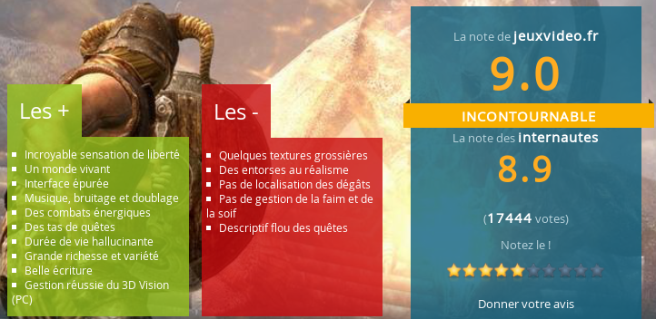
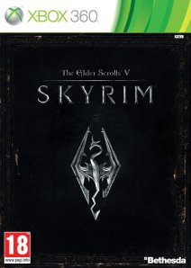

The Elder Scrolls 5 : Skyrim

Résumé
The Elder Scrolls 5 : Skyrim est le futur jeu de la série, extrêmement attendu dans la mesure où les deux derniers épisodes ont été des claques portées coup sur coup à toute la concurrence dans le domaine du freeroaming RPG à l'occidentale, genre dans lequel le développeur Bethesda, plus qu'aucun autre, est passé maître.
Les Dragons évoqués dans les Elder Scrolls, oubliés depuis, reviennent à Tamriel. Le futur de Bordeciel et de l'Empire tout entier repose sur une prophétie évoquant le retour d'un Enfant de dragon : un héros possédant le pouvoir de la Voix, le seul et unique être capable d'affronter les dragons.
Information
